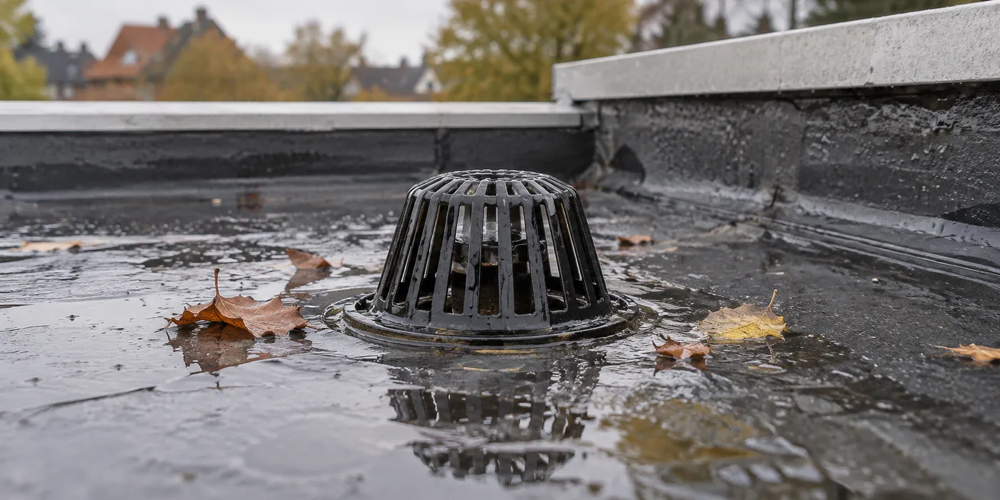

Verzamel vergelijkbare waarnemingen
Noteer de datum, regenperiode en hoelang het water zichtbaar blijft. Neem foto’s vanaf een veilige positie; betreed het dak niet om betere beelden te krijgen. Meld ook of er binnen vocht is en of het probleem na nieuwe werken ontstond. Met die informatie kan een vakman de situatie gerichter beoordelen.
Vraag om een onderhouds- én constructiecheck
Een vervuilde uitloop en een probleem met afschot zijn verschillende opdrachten. Laat de aannemer beschrijven wat hij vaststelt, welke delen bereikbaar zijn en wat hij niet kan controleren zonder onderzoek. Buildwise noemt regelmatig onderhoud belangrijk voor platte daken. Gebruik dat als aanleiding voor een onderhoudsplan, niet als bewijs dat elke waterplas door bladeren komt.

Leg toegang en opvolging vast
Vraag hoe afvoeren bereikbaar blijven als er later zonnepanelen of andere voorzieningen op het dak komen. Laat ook bespreken wanneer een volgende controle nodig is. Bewaar de bevindingen zodat je bij een latere inspectie hetzelfde punt kunt vergelijken. Een afgeronde herstelling hoort een beschrijving te hebben van de oorzaak en de uitgevoerde oplossing.
Vraag geen herstelling zonder oorzaakbeschrijving
Als een aannemer een plaatselijke ingreep voorstelt, vraag dan welk vastgesteld probleem daarmee wordt opgelost. Laat aangeven of er nog onbeoordeelde dakdelen zijn en welke controle na uitvoering volgt. Zo kun je een nieuwe waarneming later vergelijken met het eerdere verslag. Een foto vóór en na de ingreep is nuttig, maar vervangt geen beschrijving van de oorzaak. Noteer ook wanneer zonnepanelen of andere voorzieningen de toegang tot het dak hebben veranderd.
Een praktisch voorbeeld
Na een bui zie je water bij een uitloop, maar geen vocht binnen. Dat rechtvaardigt een controle; het bewijst niet zelfstandig dat de volledige dakafdichting vervangen moet worden.
Illustratief scenario, geen klantcase.
Neem dit mee naar je gesprek
- Foto’s met datum
- Tijdsverloop na regen
- Afvoer én afschot laten beoordelen
- Toegang voor volgend onderhoud
Veelgestelde vraag
Kan ik zelf de afvoer op het dak vrijmaken?
Laat bereikbaarheid en veilig onderhoud beoordelen. Klim niet op het dak voor een diagnose of herstelling.
Bron en achtergrond
Buildwise: officiële of technische achtergrond bij dit onderwerp ↗
Geraadpleegd op 13 oktober 2026. De praktische checklist en het voorbeeld zijn redactionele uitwerkingen. Fabrikantinformatie geldt voor de beschreven producten; ze is geen algemene garantie voor andere systemen.
Wat betekent dit voor jouw woning?
Gebruik de calculator voor een eerste indicatie. Een vakman beoordeelt jouw situatie en bevestigt de uitvoering en definitieve prijs.
Bekijk de dakwerkencalculator →